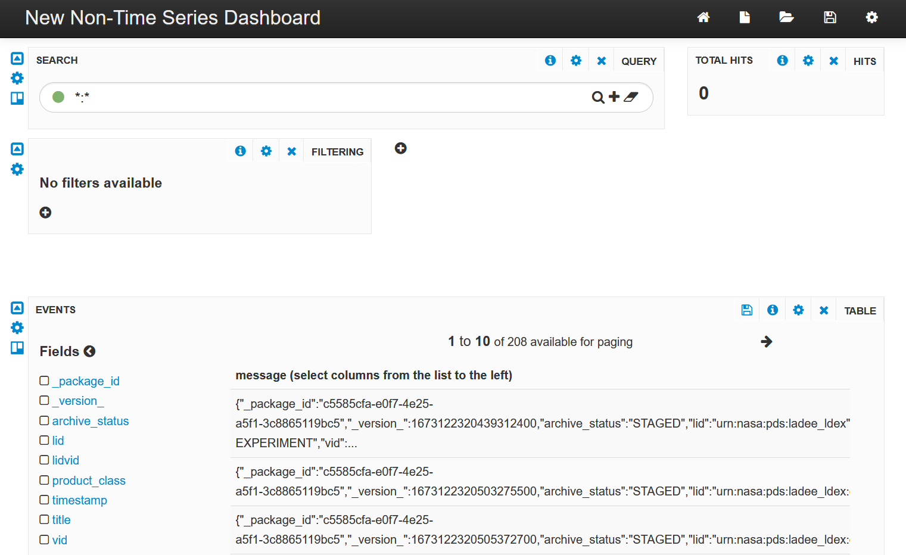
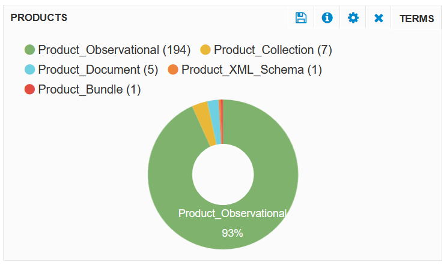

Reporting & Visualization
Current version of PDS Registry uses Apache Solr to store data. To create simple reports and visualizations you can utilize Lucidworks Banana.
Lucidworks Banana
Banana is an open source project forked from an old Kibana version.
NOTE: The project is in maintenance mode. There is almost no documentation or other online resources to get any help.
Security WARNING: Banana is a JavaScript application which requires direct access to Solr APIs. Run it only on a private LAN.
Installation in NGINX
Banana is a JavaScript application writtent in AngularJS v1.0.8 and can be installen in any web server. The following instructions are for NGINX server.
Step 1: Download and install Banana web app
Download latest source release and extract it to some folder such as /tmp.
Create a directory for Banana web application, such as /opt/nginx/apps/banana.
Copy content of /tmp/banana-1.6.26/src directory to /opt/nginx/apps/banana.
Step 2: Configure Solr
Create "banana-int" collection for storing Banana dashboards in Solr.
$SOLR_HOME/bin/solr create -c banana-int
Step 3: Configure NGINX
NOTE: Banana is calling Solr APIs directly from a web browser. For this to work, you either have to enable cross-origin resource sharing (CORS) for Solr or use a reverse proxy. In the following example we configured reverse proxy for /solr location, so both /banana and /solr urls are available on the same host.
Security WARNING:In this configuration, all Solr APIs are accessible through /solr/ URL.
http {
...
upstream solr-app {
server localhost:8983;
}
server {
listen 80;
server_name _;
location /solr {
proxy_pass http://solr-app/solr;
}
location /banana {
root /opt/nginx/apps;
index index.html;
}
}
}
Step 4: Test Installation
In a web browser go to /banana URL on your NGINX server, for example, http://www.test.local/banana. You should see a web page similar to this.

Troubleshooting
Banana is a JavaScript application. You can see error messages in your web browser "developer console".
Banana UI Quick Start
To create new dashboard, click "New" icon in the top menu, then select "Non time-series dashboard".

On the next screen enter Solr URL "/solr/" and collection name "registry".
NOTE: Because we are using NGINX reverse proxy, we entered relative URL "/solr/". You can enter any URL, such as "http://my-solr.my-site.com/solr/", but it will only work if CORS is enabled for that URL (there should be the following header in each Solr response: 'Access-Control-Allow-Origin' = '*').

Now you should see your new dashboard with several default panels of different type, such as query, hits, filtering, and table.

The panel type is shown in the upper right corner of each panel. The "EVENTS" panel should display conents of "registry" collection. You can customize existing panel, delete or add new panels.
To create a new panel, click the plus sign next to the filtering panel. Select "terms" panel type. This panel type will use faceted query to group data by a field given in "field" text box. Enter "product_class" in this box. Also select "pie" style to create a pie chart. You can also check "Donut" checkbox to create a "donut" chart. Click "Add Panel".

You should see a new panel similar to this.

Banana vs Kibana
Sumary
| Feature | Banana | Kibana |
|---|---|---|
| Supported backends | Solr | Elasticsearch |
| Architecture | Web browser UI (JavaScript) directly calling Solr APIs. This creates cross-origin resource sharing (CORS) and Solr security issues. |
Kibana web UI and Kibana server. Kibana server is calling Elasticsearch APIs. |
| Popularity | Not popular. Project is in maintenance mode. | Very popular. New features are released regularly. Commercial support is available. |
| Documentation | Almost no documentation or other online resources. | Good documentation on Elastic web site, blogs, forums and other resources. |
| Usability, Look and Feel | Outdated UI. Frequent JavaScript errors. Without documentation it is very hard to figure out which visualizations are available and how to use them. Basic charts look good. Long labels are not truncated and values (e.g., counts) can be shown in legends. | In general, Kibana has mothern UI which is easy to use, but I didn't like chart look and feel. Long labels are truncated in legends and in pie charts. |
| Customization | Easy to customize colors, legend location, number precision. | I didn't find how to change chart colors. It is very hard to change number format / precision. |
| Extensibility | Banana is a simple (small) AngularJS 1.0 application. You can write custom panels / visualizations in JavaScript (AngularJS). | Kibana plugin interface is available, but it changes frequently. A plugin version should match Kibana version. |
| Application Size | Very small - 7MB | Huge - 1GB+ |
Sample Visualizations
| Banana | Kibana |
|---|---|
 |
|
 |
 |